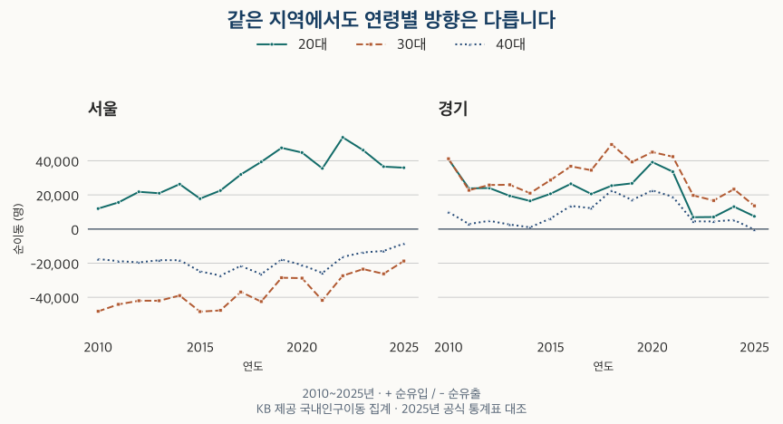

이사와 인구 · 연령별 순이동
20·30대는 서울로, 40대는 경기로? 16년 순이동으로 확인했습니다
2010~2025년 서울·경기 연령별 순이동을 비교합니다. 서울 20대와 30대의 반대 방향, 2025년 경기 40대의 반례를 확인하고 주거 수요 해석의 한계를 짚습니다.
분석 기간 · 2010~2025년 · 서울·경기 광역 전체 주민 | 자료 기준일 · 2026-10-03
“20·30대는 서울로 들어오고, 40대는 경기도로 나간다.” 이사와 인구를 설명할 때 익숙한 이야기입니다. 2010~2025년 통계를 나눠 보면 이 문장은 그대로 성립하지 않습니다. 서울의 20대는 16년 내내 순유입, 30대는 16년 내내 순유출이었습니다. 경기의 40대도 2025년에는 순유출로 바뀌었습니다.
순이동이 줄었다면 들어오는 사람도 줄었나요?
그럴 수도 있지만, 순이동만으로는 알 수 없습니다. 순이동은 전입에서 전출을 뺀 값입니다. 양수는 들어온 쪽이 더 많다는 뜻이고, 음수는 나간 쪽이 더 많다는 뜻입니다. 전입과 전출이 모두 늘어도 두 수의 차이는 작아질 수 있습니다.
국내인구이동통계는 전입신고를 바탕으로 읍면동 경계를 넘는 거주지 이동을 셉니다. 여기서는 1월부터 12월까지의 연간 값을 사용합니다. 서울 안에서 구를 옮긴 이동은 서울의 전입과 전출 양쪽에 들어가므로 서울 전체 순이동에서는 상쇄됩니다. 경기 안의 이동도 마찬가지입니다.
단위는 가구나 계약 건수가 아닌 명입니다. 아파트 외 주택의 이동도 포함하며, 이 숫자가 그만큼의 아파트 매수자를 뜻하지는 않습니다. 인구·세대·가구의 차이를 먼저 구분하면 뒤의 숫자를 해석하기 쉬워집니다.
서울의 20대와 30대는 같은 방향으로 움직였나요?
아닙니다. 2010~2025년 16개 연도에서 서울의 20대는 모두 양수, 30대는 모두 음수였습니다. 서울 40대 역시 같은 기간 모두 음수입니다. ‘20·30대가 서울로 들어온다’고 묶으면 30대의 반대 방향을 가리게 됩니다.

경기는 20대와 30대가 16년 모두 순유입이었습니다. 40대는 2010~2024년에는 순유입이었지만, 2025년에는 372명 순유출로 부호가 바뀌었습니다. 2024년의 5,289명 순유입과도 다릅니다. 장기간의 경향을 ‘매년 유지되는 법칙’으로 바꾸면 이 반례를 놓칩니다.
2010~2025년 20·30·40대 순이동 전체 표
| 연도 | 서울 20대 | 서울 30대 | 서울 40대 | 경기 20대 | 경기 30대 | 경기 40대 |
|---|---|---|---|---|---|---|
| 2010 | +11,981 | -48,257 | -17,602 | +40,820 | +41,223 | +9,946 |
| 2011 | +15,607 | -44,140 | -18,785 | +23,810 | +22,736 | +2,930 |
| 2012 | +21,807 | -42,029 | -19,537 | +24,048 | +25,816 | +4,831 |
| 2013 | +20,979 | -42,023 | -18,270 | +19,429 | +25,928 | +2,634 |
| 2014 | +26,300 | -38,964 | -18,241 | +16,461 | +21,028 | +1,002 |
| 2015 | +17,790 | -48,397 | -24,826 | +20,627 | +28,664 | +6,176 |
| 2016 | +22,563 | -47,696 | -27,265 | +26,486 | +36,733 | +13,541 |
| 2017 | +31,955 | -36,865 | -21,640 | +20,556 | +34,461 | +12,225 |
| 2018 | +39,341 | -42,521 | -26,459 | +25,395 | +49,579 | +22,583 |
| 2019 | +47,566 | -28,541 | -17,885 | +26,781 | +39,302 | +17,023 |
| 2020 | +44,823 | -28,783 | -21,052 | +39,191 | +45,067 | +22,606 |
| 2021 | +35,520 | -41,826 | -25,780 | +33,585 | +42,396 | +18,897 |
| 2022 | +53,689 | -27,330 | -16,315 | +6,924 | +19,677 | +4,501 |
| 2023 | +46,205 | -23,489 | -13,699 | +7,049 | +16,748 | +4,454 |
| 2024 | +36,561 | -26,224 | -12,864 | +13,121 | +23,338 | +5,289 |
| 2025 | +35,937 | -18,730 | -8,491 | +7,439 | +13,614 | -372 |
서울의 음수와 경기의 양수를 서로 마주 놓았다고 해서 서울에서 나간 사람이 모두 경기로 들어왔다고 알 수는 없습니다. 각 지역의 순이동은 전국 다른 지역과 주고받은 이동을 합친 결과입니다. 두 지역 사이의 직접 이동을 보려면 출발지와 도착지가 함께 있는 통계가 필요합니다.
전체 인구의 순이동은 연령별 이야기와 어떻게 다른가요?
2025년 서울 전체는 26,769명 순유출이었지만 20대와 0~19세는 순유입이었습니다. 경기 전체는 32,970명 순유입이었지만 0~19세와 40대는 순유출이었습니다. 전체의 부호가 모든 연령대의 부호를 대표하지 않습니다.
| 연령 | 서울 | 경기 |
|---|---|---|
| 0~19세 | +4,618 | -1,655 |
| 20대 | +35,937 | +7,439 |
| 30대 | -18,730 | +13,614 |
| 40대 | -8,491 | -372 |
| 50대 | -14,582 | +2,360 |
| 60대 | -14,552 | +3,398 |
| 70세 이상 | -10,969 | +8,186 |
| 전체 | -26,769 | +32,970 |
이 표의 수치는 사람 수의 차이이며 순이동률은 아닙니다. 주민 규모가 다른 지역의 이동 강도를 비교하려면 해당 연령의 인구를 분모로 삼은 비율도 필요합니다. 이 글은 연령별 인구 분모를 결합하지 않았으므로 어느 연령이나 지역이 더 ‘인기 있다’는 순위로 읽지 않습니다.
전체 인구가 얼마나 늘었는지도 순이동만으로 계산할 수 없습니다. 국내 이동 외에 출생·사망과 국제 이동 등 인구 변화를 만드는 다른 요인이 있습니다.
20대에 서울로 갔다가 30대에 나오는 삶을 보여주나요?
그런 경로를 겪는 사람은 있을 수 있습니다. 대학·직장·가족 구성·주거비가 이사와 관련될 수 있다는 해석도 가능합니다. 다만 이 표는 같은 사람을 따라간 기록이 아닙니다. 2010년의 20대와 2025년의 30대에는 서로 다른 사람이 섞여 있습니다.
따라서 ‘취업 때문에 서울로 들어왔다’, ‘결혼하면서 경기도 아파트를 샀다’는 설명은 이 숫자만으로 확인되지 않습니다. 이동 사유와 가구 형태, 주택 유형을 별도로 확인해야 합니다. 서울 30대의 순유출이 길게 이어졌다는 관측과 집값이 그 원인이라는 주장은 구분해야 합니다.
반대로 지역 전체 통계가 집을 고를 때 아무 소용이 없는 것은 아닙니다. 연령별 이동 방향은 추가로 확인할 질문을 알려줍니다. 가족과 이사할 곳을 찾는다면 그 지역의 40대 전체보다 관심 생활권의 가구 구성·통학·주택 선택지를 이어 살펴보는 편이 목적에 맞습니다. 광역 통계는 조사의 출발점입니다.
이사할 동네의 인구 기사를 볼 때 무엇을 확인하나요?
- 전입인지 순이동인지 확인하세요. 전입자가 많아도 전출자가 더 많으면 순유출입니다.
- 연령을 나눠 보세요. 20대와 30대가 반대로 움직이는지, 넓은 묶음이 차이를 가리지 않는지 확인합니다.
- 같은 기간을 비교하세요. 완결된 연간 수치와 몇 달치 누적값을 나란히 놓지 않습니다.
- 지역 범위를 맞추세요. 경기도 전체의 방향을 특정 시나 신축 아파트 입주자의 특성으로 옮기지 않습니다.
- 자신의 주거 조건으로 돌아오세요. 예산·통근·임차 조건·가구 구성에 필요한 근거를 추가합니다. 순유입만으로 가격 상승이나 매수 시점을 판단하지 않습니다.
16년을 나눠 보면 서울의 20대와 30대는 같은 방향이 아니었고, 경기의 40대도 늘 순유입인 것은 아니었습니다. 익숙한 이야기를 먼저 정하기보다 연령·기간·지역을 나눈 숫자부터 확인해 보세요.
자료·검증 범위와 한계
KB에서 제공하는 인구이동 연령별 전출입 및 전체 전출입 자료를 사용했습니다. 자료 수집일은 2026년 10월 3일이며, 비교 기간은 2010~2025년입니다. 수집 당시의 계열로 과거 공표 당시의 값이 모두 같았다고 가정하지 않습니다. 2026년 일부 월은 연간 비교에서 제외했습니다.
서울·경기의 32개 연간 관측을 384개 월간 관측의 합계와 대조했습니다. 연령별 합계, 전입에서 전출을 뺀 값, 별도 전체 이동 자료 및 대시보드 값을 함께 확인했습니다. 2025년 값은 국가데이터처 ‘2025년 국내인구이동통계 결과’(2026년 1월 29일 발표, 통계표 5·본문 35~36쪽)의 5세 구간을 다시 합산해 확인했습니다. 외부 공식 표와의 상세 대조는 2025년에 한정하며, 확인일은 2026년 10월 12일입니다.
0~19세·20대·30대·40대·50대·60대·70세 이상을 구분합니다. 30대 후반만의 장기 추이나 시별 순위를 계산하지 않았습니다. 수치와 표는 정수 명 단위이며 그래프도 같은 값을 사용합니다. 서울과 경기에는 두 광역 밖과의 이동이 포함되며, 인천을 더한 수도권 전체를 뜻하지 않습니다.
실제 이동과 신고 통계는 미신고·지연신고 등으로 차이가 날 수 있습니다. 개인별 이동 경로와 원인, 아파트 매수 여부, 인구 대비 이동률을 확인한 분석은 아닙니다. 이 글의 연간 집계 자료(JSON)에서 표와 그래프에 사용한 값을 확인할 수 있습니다.
분석·집필: 파파펭귄 (Nobot Kang). 에이전트로 공식 근거 대조·자료 확인·초안 검토를 보조했습니다.